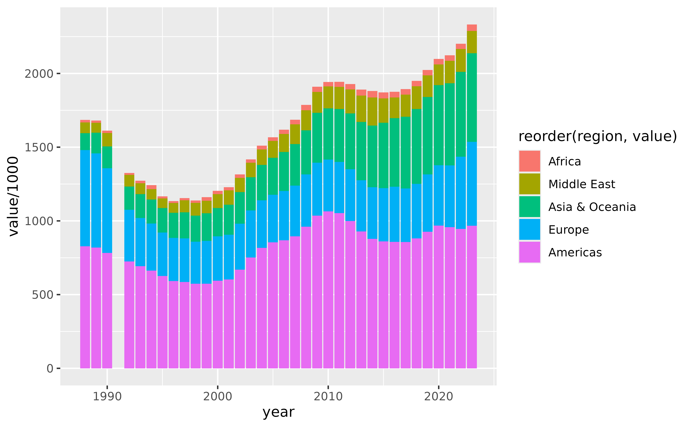

Getting Data
Querying the Military Expenditure Database by SIPRI can be done
through their website,
however, the resulting xlsx is rather tedious to parse
because of some formatting choices taken by the team.
Hence this function makes it easy to directly import this database to R and parse not only the different indicators, but also the associated footnotes.
The following code is all you need to query data from their website.
library(milRex)
milex <- sipri_get_data(indicator = "constantUSD")The available indicators are:
| Description | indicator |
|---|---|
| Constant (2022) US$ | constantUSD |
| Current US$ | currentUSD |
| Share of GDP | shareOfGDP |
| Share of Govt. spending | shareGovt |
| Regional totals | regionalTotals |
| Local currency financial years | currencyFY |
| Local currency calendar years | currencyCY |
| Per capita | perCapita |
| all of the above | all |
Aggregating data by regions
The package also comes with a pre-packaged data-frame that allows you to merge SIPRIs regional coding to the data-frame.
We join the two dataframes by the country names, exclude values for 1991 where a total cannot be calculated because the Soviet Union is missing in the data and then sum the values acorss regions and years.
library(dplyr)
library(lubridate)
milex_regional <- milex |>
dplyr::left_join(milRex::sipri_regions) |> ## join data
dplyr::summarise(value = sum(value, na.rm = T),
.by = c(region, year)) |> ## sum up
dplyr::filter(year >= 1988)|> ## exclude values pre-1988
dplyr::mutate(value = if_else(year == 1991, 0, value)) |> # exclude 1991
dplyr::mutate(year = paste(year, "01-01") |>
lubridate::ymd()) # format dates nicely Plotting the data
Now we can replicate a common graph used by SIPRI to show military spending by regions.
library(ggplot2)
ggplot2::ggplot(milex_regional) +
ggplot2::geom_col(ggplot2::aes(year, value/1000,
fill = reorder(region, value)))
This looks rather ugly, but we can approximate the styling of SIPRI, as in the plot here:
ggplot(milex_regional) +
geom_col(aes(year, value/1000, fill = reorder(region, value))) +
labs(y = "Militarxy expenditure\n (constant 2022 USD billion)",
caption = "1991 not present because no values for Soviet Union.\n See https://www.sipri.org/sites/default/files/2024-04/2404_fs_milex_2023.pdf",
fill = "Region",
x = "") +
theme_bw() +
theme(plot.background = element_rect(fill = rgb(215, 229, 221,
maxColorValue = 255)),
panel.background = element_rect(fill = rgb(215, 229, 221,
maxColorValue = 255)),
legend.background = element_rect(fill = rgb(215, 229, 221,
maxColorValue = 255)),
legend.position = "top",
legend.text = element_text(size = 6),
legend.title = element_text(size = 6,face = "bold"),
panel.border = element_blank(),
axis.line.x = element_line(),
text = element_text(size = 9),
legend.key.size = unit(0.05, 'in'))+
scale_fill_manual(values =
c(
rgb(83,50,82, maxColorValue = 255),
rgb(118,81,116, maxColorValue = 255),
rgb(186,144,177, maxColorValue = 255),
rgb(154,173,164, maxColorValue = 255),
rgb(100,156,136, maxColorValue = 255)
))+
scale_x_date(breaks = "4 years",date_labels = "%Y")